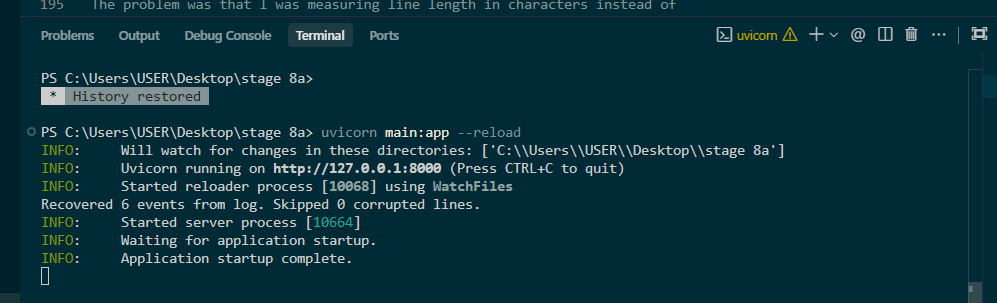

Stage 8a
Append-Only Event Store
Python
FastAPI
Storage WAL
Pytest
A custom-built, lightweight database engine that streams event records into an append-only log file on disk (`events.log`) and reads them back in O(1) time using an in-memory byte offset index.
My Contribution
- Designed and built the log appending storage controller to prevent in-place file corruption.
- Implemented an automated startup recovery mechanism that parses bytes line-by-line to rebuild the memory index while skipping corrupt data.
- Solved UTF-8 multi-byte unicode calculation bugs by measuring pre-encoded bytes rather than character counts.

Log index rebuild on startup